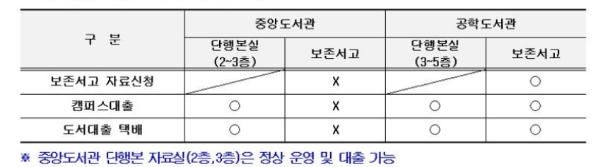

기말고사기간 도서관 연장 운영
- 기간 : 2021.12.8(수) ~ 12.20(월)
- 중앙도서관 : 미래로 열람실(1층), 일반 열람실(4층)
시간 : 08:00 ~ 23:00
중앙도서관 : 멀티미디어실(1층), 단행본실(2-3층)
시간 : 09:00 ~ 23:00
※ [토요일] 09:00 ~ 13:00 , [일요일] : 휴관
- 청운관 : 열람실 전체
시간 : 08:00 ~ 23:00
- 참고사항 : 코로나 방역 수칙 준수
-좌석 간 거리두기
-마스크 착용, 손 소독 철저
-전 열람실 좌석 배정(모바일에서 가능) 후 이용
보존서고 <대출 서비스> 일시중지 안내
- 서비스 중지 기간 : 2021.12.6(월) ~ 12.15(수) [10일간]
- 서비스 중지 내용 : 소장처가 '중앙도서관 보존서고'인 자료의 보존서고 자료신청
- 소장처별 대출 서비스 제공 여부
